Última atualização: 20 outubro, 2026
Assumiremos uma amostra aleatória \(X_1,X_2,\ldots,X_n\) de uma população com densidade \(f(\cdot;\theta)\), onde a forma da densidade é conhecida, mas o parâmetro \(\theta\) é desconhecido. Em alguns cenários \(\theta\) será um vetor de parâmetros \(\theta=(\theta_1,\theta_2,\ldots,\theta_m)\).
Definição 1 (Estimador) Seja \(X_1,X_2,\ldots,X_n\) uma amostra aleatória de uma população com função de densidade \(f(\cdot;\theta)\). Um estimador \(T=t(X_1,X_2,\ldots,X_n)\) é uma estatística usada para estimar alguma função de \(\theta\).
Exemplo 1 A estatística \(\bar{X}_n=\frac1n\sum_{i=1}^nX_i\) é um estimador da média \(\mu=\mathbb{E}[X]\).
Definição 2 (Viés) Um estimador \(T=t(X_1,X_2,\ldots,X_n)\) se diz não-viesado do parâmetro \(\tau(\theta)\) se e somente se \(\mathbb{E}[T]=\tau(\theta)\), para todo \(\theta\in\Theta\). O viés do estimador \(T\) é dado por \[B(T)=\mathbb{E}[T]-\tau(\theta)=\mathbb{E}\left[t(X_1,X_2,\ldots,X_n)\right]-\tau(\theta).\]
Exemplo 2 Seja \(X_1,X_2,\ldots,X_n\) uma amostra aleatória de uma população com função de densidade \(f(\cdot;\mu,\sigma^2)\). Sejam \(\bar{X}_n=\frac1n\sum_{i=1}^nX_i\) e \(S^2_n=\frac{1}{n-1}\sum_{i=1}^n(X_i-\bar{X}_n)^2\) os estimadores de \(\mu\) e \(\sigma^2\), respectivamente. Qual o viés dos estimadores?
Sabemos que, \(\mathbb{E}[\bar{X}_n]=\mathbb{E}\left[\frac1n\sum_{i=1}^nX_i\right]=\frac1n\sum_{i=1}^n\mathbb{E}[X_i]=\mu\). Daí, \(\bar{X}_n\) é um estimador não-viesado de \(\mu\).
Para \(S^2_n\), temos que
\[\begin{align*} \mathbb{E}\left[S^2_n\right]&=\mathbb{E}\left[\frac{1}{n-1}\sum_{i=1}^n(X_i-\bar{X}_n)^2\right] =\frac{1}{n-1}\sum_{i=1}^n\mathbb{E}\left(X_i-\bar{X}_n\right)^2\\ &=\frac{1}{n-1}\sum_{i=1}^n\mathbb{E}\left(X_i-\mu+\mu-\bar{X}_n\right)^2\\ &=\frac{1}{n-1}\sum_{i=1}^n\left\{\mathbb{E}\left(X_i-\mu\right)^2+\mathbb{E}\left(\mu-\bar{X}_n\right)^2-2\mathbb{E}\left(X_i-\mu\right)\left(\mu-\bar{X}_n\right)\right\}\\ &=\frac{1}{n-1}\left\{n\sigma^2-\sigma^2\right\}=\sigma^2. \quad\blacksquare \end{align*}\]
Daí, \(\bar{X}_n\) e \(S^2_n\) são esimadores não-viesados de \(\mu\) e \(\sigma^2\), respectivamente.
Definição 3 (Erro Quadrático Médio) Seja \(T=t(X_1,X_2,\ldots,X_n)\) um estimador do parâmetro \(\tau(\theta)\). O Erro Quadrático Médio (EQM) de \(T\) define-se como \[\mathrm{EQM(T)}=\mathbb{E}\left[T-\tau(\theta)\right]^2=\mathbb{E}\left[t(X_1,X_2,\ldots,X_n)-\tau(\theta)\right]^2.\]
Observação
Note que,
\[\begin{align*} \mathrm{EQM(T)}&=\mathbb{E}\left[T-\tau(\theta)\right]^2=\mathbb{E}\left[T^2-2T \tau(\theta)+\tau^2(\theta)\right] =\mathbb{E}\left[T^2\right]-2\tau(\theta)\mathbb{E}\left[T\right] +\tau^2(\theta)\\ &=\mathbb{E}\left[T^2\right]-\left[\mathbb{E}T\right]^2+\left[\mathbb{E}T\right]^2+2\tau(\theta)\mathbb{E}\left[T\right] +\tau^2(\theta) =\mathrm{var}\left[T\right]+\left[\mathbb{E}T-\tau(\theta)\right]^2\\ &=\mathrm{var}\left[T\right]+B^2(T). \quad\blacksquare \end{align*}\]
Do resultado acima, pode-se afirmar que, se o estimador \(T\) é não-viesado, então \(\mathrm{EQM(T)}=\mathrm{var}[T]\).
Exemplo 3 Seja \(X_1,X_2,\ldots,X_n\) uma amostra aleatória de uma população com distribuição com média \(\mu\) e variância \(\sigma^2\). Calcule o EQM do estimador \(T=M_2'=\frac1n\sum_{i=1}^n\left(X_i-\bar{X}_n\right)^2\).
Para o cálculo, podemos aproveitar o resultado do Exemplo 2, dessa forma
\[\begin{align*} \mathbb{E}\left[M_2'\right]&=\frac1n\mathbb{E}\left[\sum_{i=1}^n\left(X_i-\bar{X}_n\right)^2\right] =\frac{n-1}{n}\frac{1}{n-1}\mathbb{E}\left[\sum_{i=1}^n\left(X_i-\bar{X}_n\right)^2\right]\\ &=\frac{n-1}{n}\mathbb{E}\left[S^2\right]=\frac{n-1}{n}\sigma^2. \quad\blacksquare \end{align*}\]
O EQM é calculado como
\[\begin{align*} \mathrm{EQM}\left(M_2'\right)&=\mathbb{E}\left[\frac{n-1}{n}S^2-\sigma^2\right]^2 =\mathrm{var}\left[M_2'\right]+\left(\frac{n-1}{n}\sigma^2-\sigma^2\right)^2\\ &=\mathrm{var}\left[M_2'\right]+\frac{\sigma^4}{n^2} =\frac{(n-1)^2}{n^2}\mathrm{var}\left[S^2\right]+\frac{\sigma^4}{n^2}. \end{align*}\]
Dessa forma, temos que
\[\begin{align*} \mathrm{EQM}\left(M_2'\right) &=\frac{(n-1)^2}{n^2}\mathrm{var}\left[S^2\right]+\frac{\sigma^4}{n^2} = \frac{(n-1)^2}{n^2}\frac1n\left(\mu_4-\frac{n-3}{n-1}\sigma^4\right)+\frac{\sigma^4}{n^2}, \end{align*}\]
para \(n>1\), onde \(\mu_4=\mathbb{E}(X_i-\mu)^4\).
vide Exercício 3 da Aula 1.
Observação
O EQM é comumente utilizado para comparar o desempenho de dois estimadores, por exemplo, se existir um estimador não-viesado \(T^*\), tal que, \(\mathrm{var}\left[T^*\right]\le\mathrm{var}\left[T\right]\), então, o estimador \(T^*\) é dito um estimador não-viesado com variância minima.
Exemplo 4 Seja \(X_1,X_2\) e \(X_3\) uma amostra aleatória de uma população com função de densidade de probabilidade \(f(x; \theta, 1)\), onde \(\theta\) e \(1\) representam a média e a variância da população, respectivamente. Considere os seguintes estimadores: \(T_1=\bar{X}_3=\frac13\sum_{i=1}^3X_i\) e \(T_2=\frac12X_1+\frac14X_2+\frac14X_3\). Calcule o viés e o \(\mathrm{EQM}\) dos estimadores.
Pelo Corolario 2, temos que \(\mathbb{E}T_1=\mathbb{E}[\bar{X}_3]=\theta\) e \(\mathrm{var}\left[\bar{X}_3\right]=\frac1n\). Por outra parte, \(\mathbb{E}T_2=\left(\frac12+\frac14+\frac14\right)\theta=\theta\) e \(\mathrm{var}\left[T_2\right]=\frac{6}{16}\). Comparando os dois estimadores, observa-se que o estimador \(T_1=\bar{X}_3\) é um estimador não-viesado de menor variância.
Exemplo 5 Seja \(X_1,X_2,\ldots, X_n\) uma amostra aleatória de uma população com distribuição uniforme no intervalo \((0,\theta)\). Considere os seguintes estimadores para \(\theta\): \(T_1=\bar{X}_n=\frac1n\sum_{i=1}^nX_i\) e \(T_2=Y_n=\max\{X_1,X_2,\ldots, X_n\}\). Calcule o viés e o \(\mathrm{EQM}\) dos estimadores.
Sabemos que, se \(X\) é uma variável aleatória de uma população com distribuição uniforme no intervalo \((0,\theta)\), então \(\mathbb{E}[X]=\frac12\theta\) e \(\mathrm{var}[X]=\frac{\theta^2}{12}\). Dessa forma, temos que \(\mathbb{E}T_1=\frac12\theta\) e \(\mathrm{var}\left[T_1\right]=\frac{\theta^2}{12n}\). De fato, o estimador \(T_1\) é um estimador viesado para \(\theta\).
O \(\mathrm{EQM}\) do estimador \(T_1\) é dado por \[\mathrm{EQM}(T_1)=\frac{\theta^2}{12n}+\left(\frac12\theta-\theta\right)^2=\frac{1+3n}{12n}\theta^2.\]
Por outra parte,
\[\begin{align*} f_{Y_n}(y)&=\frac{n!}{(n-1)!(n-n)!}\left[F(y)\right]^{n-1}[1-F(y)]^{n-n}f(y)\\ &=n\left[F(y)\right]^{n-1}f(y)=n\left(\frac{y}{\theta}\right)^{n-1}\frac1\theta\mathbb{I}_{(0,\theta)}(y). \end{align*}\]
Dessa forma,
\[\begin{align*} \mathbb{E}Y_n &=\int_0^\theta x\frac{nx^{n-1}}{\theta^n}\,dx=\frac{n}{\theta^n}\left.\frac{x^{n+1}}{n+1}\right|_0^\theta =\frac{n}{\theta^n}\frac{\theta^{n+1}}{n+1}=\frac{n}{n+1}\theta; \\ \\ \mathbb{E}Y^2_n &=\int_0^\theta x^2\frac{nx^{n-1}}{\theta^n}\,dx=\frac{n}{\theta^n}\left.\frac{x^{n+2}}{n+2}\right|_0^\theta =\frac{n}{\theta^n}\frac{\theta^{n+2}}{n+2}=\frac{n}{n+2}\theta^2. \end{align*}\]
Assim, \(\mathrm{var}[Y_n]=\frac{n}{n+2}\theta^2-\left(\frac{n}{n+1}\theta\right)^2=\frac{n(n+1)^2-n^2(n+2)}{(n+1)^2(n+2)}\theta^2=\frac{n}{(n+1)^2(n+2)}\theta^2\). Dessa forma,
\[\begin{align*} \mathrm{EQM}(T_2) &= \frac{n}{(n+1)^2(n+2)}\theta^2+\left(\frac{n}{n+1}\theta-\theta\right)^2\\ &=\frac{n}{(n+1)^2(n+2)}\theta^2+\frac{1}{(n+1)^2}\theta^2\\ &=\frac{n+n+2}{(n+1)^2(n+2)}\theta^2=\frac{2}{(n+1)(n+2)}\theta^2. \end{align*}\]
Observa-se que, o estimador \(T_2\) é assintoticamente não-viesado e o \(\mathrm{EQM}(T_2)\longrightarrow0\), quando \(n\to\infty\).
Exemplo 6 Seja \(X_1,X_2,\ldots, X_n\) uma amostra aleatória de uma população com densidade \(f(\cdot; \mu, \sigma^2)\).
\[\mathbb{E}\left[\sum_{i=1}^na_iX_i\right]=\sum_{i=1}^na_i\mathbb{E}\left[X_i\right]=\sum_{i=1}^na_i\mu=\mu\sum_{i=1}^na_i=\mu;\]
Sabemos que,
\[\mathrm{var}\left[\sum_{i=1}^na_iX_i\right]=\sum_{i=1}^na^2_i\mathrm{var}\left[X_i\right]=\sum_{i=1}^na^2_i\sigma^2=\sigma^2\sum_{i=1}^na^2_i. \]
O termo \(\sum_{i=1}^na^2_i\) pode ser reescrito como
\[\begin{align*} \sum_{i=1}^na^2_i &= \sum_{i=1}^n\left(a_i-\frac1n+\frac1n\right)^2 = \sum_{i=1}^n\left(a_i-\frac1n\right)^2+\sum_{i=1}^n\frac{1}{n^2}+2\sum_{i=1}^n\left(a_i-\frac1n\right)\frac1n\\ &= \sum_{i=1}^n\left(a_i-\frac1n\right)^2+\frac{1}{n}+\frac2n\sum_{i=1}^n\left(a_i-\frac1n\right)= \sum_{i=1}^n\left(a_i-\frac1n\right)^2+\frac{1}{n}. \end{align*}\]
Daí,
\[\mathrm{var}\left[\sum_{i=1}^na_iX_i\right]=\sigma^2\sum_{i=1}^na^2_i=\sigma^2\left[\sum_{i=1}^n\left(a_i-\frac1n\right)^2+\frac{1}{n}\right]=\sigma^2\sum_{i=1}^n\left(a_i-\frac1n\right)^2+\frac{\sigma^2}{n}.\]
Para avaliar os valores de \(a_i\) que minimizam a variância, considere o seguinte cenário
\[\underset{c\in\mathbb{R}}{\arg\min}\,\mathcal{h}(c)=\underset{c\in\mathbb{R}}{\arg\min}\sum_{i=1}^n\left(a_i-c\right)^2.\] Assim, \(\mathcal{h}'(c)=\sum_{i=1}^n2\left(a_i-c\right)(-1)\), então para \(\mathcal{h}'(c)=0\), \(c=\frac1n\) um ponto crítico. Sendo a segunda derivada positiva, o valor \(c=\frac1n\) é um mínimo. Dessa forma, a variância de \(\sum_{i=1}^na_iX_i\) será mínima quando \(a_i=\frac1n\), para \(i=1,2,3,\ldots,n\).
Definição 4 (Consistência em Erro Quadrático Médio) Seja \(T_1,T_2,\ldots,T_k, T_{k+1}, \ldots\) uma sequência de estimadores de \(\tau(\theta)\), tal que \(T_k=t(X_1,X_2,\ldots,X_n)\). A sequência \(\{T_k\}\) se diz consistente em Erro Quadrático Médio, com respeito a \(\tau(\theta)\), see \[\lim_{k\to\infty}\mathbb{E}\left[T_k-\tau(\theta)\right]^2=0,\] para todo \(\theta\in\Theta\).
Observação
A consistência em \(\mathrm{EQM}\) implica que tanto a variância, quanto o viés, se aproximam de zero quando \(n\to\infty\).
Definição 5 (Consistência) Seja \(T_1,T_2,\ldots,T_k, T_{k+1}, \ldots\) uma sequência de estimadores de \(\tau(\theta)\), tal que \(T_k=t(X_1,X_2,\ldots,X_n)\). A sequência \(\{T_k\}\) se diz consistente, com respeito a \(\tau(\theta)\), see \[ T_k \overset{p}{\longrightarrow} \tau(\theta),\] para todo \(\theta\in\Theta\).
Observação
Se um estimador é consistente em \(\mathrm{EQM}\), então, o estimador é consistente. Tal afirmação pode ser verificada com a seguinte relação:
\[\mathbb{P}\left(|T_n-\tau(\theta)|<\epsilon\right)=\mathbb{P}\left(|T_n-\tau(\theta)|^2<\epsilon^2\right)\ge1-\frac{\mathbb{E}\left[T_n-\tau(\theta)\right]^2}{\epsilon^2}.\]
Seja \(X_1, X_2, \ldots, X_n\) uma amostra aleatória de uma população com distribuição que envolve o parâmetro \(\theta=(\theta_1, \theta_2,\ldots, \theta_k)\). Seja \(M_j'=\frac1n\sum_{i=1}^nX_i^j\) o \(j\)-ésimo momento amostral em torno de zero. O método dos momentos consiste em determinar as estatísticas que convergem em probabilidade para cada componente \(\theta_j\), com \(j=1,2,\ldots, k\), do parâmetro \(\theta=(\theta_1, \theta_2,\ldots, \theta_k)\), a partir do sistema de equações:
\[\begin{align*} M_1' &\overset{p}{\longrightarrow} \mu_1'\\ M_2' &\overset{p}{\longrightarrow} \mu_2'\\ &\hspace{0.5cm}\vdots \\ M_k' &\overset{p}{\longrightarrow} \mu_k'. \end{align*}\]
O método dos momentos baseia-se na lei dos grandes números e pode-se formalizar com o seguinte resultado.
Teorema 1 Seja \(X_1,X_2,\ldots,X_n\) uma amostra aleatória de uma população com distribuição que envolve um parâmetro \(\theta\). Se \(\mu_{2r}=\mathbb{E}X^{2r}\) existe, então
\[\frac1n\sum_{i=1}^n\left(X_i-\bar{X}_n\right)^r \overset{p}{\longrightarrow} \mu_r. \]
Prova. Sabemos que, \(\mu_r=\mathbb{E}\left[X-\mu\right]^r\), onde \(\mu=\mathbb{E}X\), daí
\[\begin{align*} \mu_r &= \mathbb{E}\left[X-\mu\right]^r = \mathbb{E}\left(\sum_{j=0}^r\binom{r}{j}X^j(-\mu)^{r-j}\right)\\ &=\sum_{j=0}^r\binom{r}{j}(-\mu)^{r-j}\mathbb{E}X^j=\sum_{j=0}^r\binom{r}{j}\mu_j'(-\mu)^{r-j}. \end{align*}\]
Por outro lado, temos que
\[\begin{align*} \frac1n\sum_{j=1}^n\left(X_i-\bar{X}_n\right)^r &= \frac1n\sum_{i=1}^n\sum_{j=0}^r\binom{r}{j}X_i^j(-\bar{X}_n)^{r-j} =\sum_{j=0}^r\left[\frac1n\sum_{i=1}^n\binom{r}{j}X_i^j(-\bar{X}_n)^{r-j}\right]\\ &=\sum_{j=0}^r\binom{r}{j}(-\bar{X}_n)^{r-j}\frac1n\sum_{i=1}^nX_i^j=\sum_{j=0}^r\binom{r}{j}(-\bar{X}_n)^{r-j}M_j'. \end{align*}\]
Assumindo que o momento \(\mu_{2r}\) existe, então os momentos \(\mu_s\) e \(\mu_s'\) existem para \(s\le 2r\). Daí,
\[M_r=\sum_{j=0}^r\binom{r}{j}M_j'(-\bar{X}_n)^{r-j} \overset{p}{\longrightarrow} \sum_{j=0}^r\binom{r}{j}\mu_j'(-\mu)^{r-j}=\mu_r, \]
onde \(\mu_r'=\mathbb{E}[X^r]\) e \(\mu_r=\mathbb{E}[(X-\mu_X)^r]\).
Exemplo 7 Seja \(X_1,X_2,\ldots, X_n\) uma amostra aleatória de uma população com distribuição normal com média \(\mu\) e variância \(\sigma^2\). Encontre os estimadores para \(\mu\) e \(\sigma^2\) pelo método dos momentos.
Pelo método dos momentos, temos que
\[\begin{align*} \bar{X}_n=\frac1n\sum_{i=1}^nX_i &\overset{p}{\longrightarrow} \mu;\\ \frac1n\sum_{i=1}^n\left(X_i-\bar{X}_n\right)^2 &\overset{p}{\longrightarrow} \sigma^2. \end{align*}\]
Exemplo 8 Seja \(X_1,X_2,\ldots, X_n\) uma amostra aleatória de uma população com função de densidade dada por \[f(x;\theta)=\frac{\theta_2^{\theta_1}}{\Gamma(\theta_1)}x^{\theta_1-1}e^{-\theta_2 x}\mathbb{I}_{(0,\infty)}(x).\] Encontre os estimadores para \(\theta_1\) e \(\theta_2\) pelo método dos momentos.
A função de densidade de probabilidade acima representa a densidade gamma com parâmetros \(\theta_1\) e \(\theta_2\). Dessa forma, se \(X\) é uma variável aleatória de uma população com distribuição gamma\((\theta_1, \theta_2)\), então \(\mathbb{E}X=\frac{\theta_1}{\theta_2}\) e \(\mathrm{var}[X]=\frac{\theta_1}{\theta_2^2}\).
Dessa forma, pelo método dos momentos, temos que
\[\begin{align*} \bar{X}_n &\overset{p}{\longrightarrow} \frac{\theta_1}{\theta_2};\\ \frac1n\sum_{i=1}^n\left(X_i-\bar{X}_n\right)^2 &\overset{p}{\longrightarrow} \frac{\theta_1}{\theta_2^2}. \end{align*}\]
Daí, \(\dfrac{\bar{X}_n}{\frac1n\sum_{i=1}^n\left(X_i-\bar{X}_n\right)^2 } \overset{p}{\longrightarrow} \theta_2\).
Por outra parte, \(\dfrac{1}{\bar{X}_n} \overset{p}{\longrightarrow} \dfrac{\theta_2}{\theta_1}\) ou \(\left(\dfrac{\theta_1}{\bar{X}_n}\right)^2 \overset{p}{\longrightarrow} \theta_2^2\), então
\[\begin{align*} \dfrac{\dfrac{\theta_1}{\frac1n\sum_{i=1}^n\left(X_i-\bar{X}_n\right)^2}}{\left(\dfrac{\theta_1}{\bar{X}_n}\right)^2} = \dfrac{\bar{X}_n^2}{\theta_1\frac1n\sum_{i=1}^n\left(X_i-\bar{X}_n\right)^2} &\overset{p}{\longrightarrow} 1, \end{align*}\]
daí, \(\dfrac{\bar{X}_n^2}{\frac1n\sum_{i=1}^n\left(X_i-\bar{X}_n\right)^2} \overset{p}{\longrightarrow} \theta_1. \quad\blacksquare\)
Exemplo 9 Seja \(X_1,X_2,\ldots, X_n\) uma amostra aleatória de uma população com distribuição uniforme no intervalo \((-\theta,\theta)\). Encontre um estimador para \(\theta\) pelo método dos momentos.
Sendo \(X\) uma variável aleatória com distribuição uniforme em \((-\theta, \theta)\), temos que, \(\mathbb{E}X=\mu=0\) e \(\mathrm{var}[X]=\dfrac{4\theta^2}{12}=\dfrac13\theta^2\).
Dessa forma, \(\bar{X}_n \overset{p}{\longrightarrow} \mu=0\), o que significa que o estimador \(\bar{X}_n\) não tem informação sobre \(\theta\).
Nesse caso, será necessário verificar o segundo momento:
\[\frac1n\sum_{i=1}^nX_i^2 \overset{p}{\longrightarrow} \frac13\theta^2.\] Daí, o estimador de momentos para \(\theta\) é dado por
\[\sqrt{\frac3n\sum_{i=1}^nX_i^2} \overset{p}{\longrightarrow} \theta. \quad\blacksquare\]
Exemplo 10 Seja \(X_1,X_2,\ldots, X_n\) uma amostra aleatória de uma população com função de densidade de probabilidade \(f(x;\theta)=\theta e^{-\theta x}\mathbb{I}_{(0,\infty)}(x)\), com \(\theta>0\). Determine um estimador para a mediana da distribuição da amostra pelo método dos momentos.
Primeiramente, será necessário encontrar o formato analítico da mediana. Para uma variável aleatória \(X\), de uma população com função de densidade de probabilidade \(f(x;\theta)=\theta e^{-\theta x}\mathbb{I}_{(0,\infty)}(x)\), com \(\theta>0\), a função de distribuição acumulada é dada por:
\[\begin{align*} \mathbb{P}[X\le x]&=\int_0^x\theta e^{-\theta y}\,dy=\left.e^{-\theta y}\right|_x^0 =1-e^{-\theta x}. \end{align*}\]
Daí, a mediana é calculada como \(1-e^{-\theta x_{0.5}}=\frac12\) ou \(x_{0.5}=\dfrac{\log2}{\theta}\).
Por outro lado, sabemos que \(\mathbb{E}X=\dfrac1\theta\), então
\[\bar{X}_n \log2 \overset{p}{\longrightarrow} \frac{\log2}{\theta}. \quad\blacksquare\]
Exemplo 11 Seja \(X_1,X_2,\ldots, X_n\) uma amostra aleatória de uma população com distribuição Bernoulli com parâmetro \(p\in(0,1)\).
Neste caso, um estimador razoável para \(p\) poderia ser
\[\hat{p}=\frac{X_1+X_2+\cdots+X_n}{n}=\bar{X}_n,\] i.e., o estimador é construido com o quociente entre duas variáveis, uam que representa o número de sucessos e outra que representa o total de experimentos. Dessa forma, uma estimativa do estimador destaca a proporção de sucessos na realização do experimento.
Sabemos que \(\mathbb{P}[X_i=x_i]=p^{x_i}(1-p)^{1-x_i}\mathbb{I}_{\{0,1\}}(x_i)\), dessa forma se consideramos \(X_1,X_2,\dots,X_n\), temos que
\[\begin{align*} \mathbb{P}\left[X_1=x_1,X_2=x_2,\ldots,X_n=x_n\right]&=\prod_{i=1}^np^{x_i}(1-p)^{1-x_i}\mathbb{I}_{\{0,1\}}(x_i)\\ &=p^{\sum_{i=1}^nx_i}(1-p)^{n-\sum_{i=1}^nx_i}\prod_{i=1}^n\mathbb{I}_{\{0,1\}}(x_i). \end{align*}\]
Assim, parece razoável escolher um valor de \(p\) que maximize a probabilidade acima.
Daí, uma boa estimativa para \(p\) seria obtida maximizando a probabilidade
\[L(p)=p^{\sum_{i=1}^nx_i}(1-p)^{n-\sum_{i=1}^nx_i}\prod_{i=1}^n\mathbb{I}_{\{0,1\}}(x_i).\]
Como a função \(\log(\cdot)\) é estritamente crescente (monotônica) para valores maiores que zero, isso significa que o ponto que maximiza uma função \(g(x)\) é exatamente o mesmo ponto de maximiza \(\log g(x)\), ou seja
\[\underset{x}{\arg\max}\, g(x) = \underset{x}{\arg\max}\, \log g(x).\] Daí,
\[{\cal l}(p)=\log L(p)=\sum_{i=1}^nx_i\log p+\left(n-\sum_{i=1}^nx_i\right)\log(1-p)+\log\prod_{i=1}^n\mathbb{I}_{\{0,1\}}(x_i)\]
\[\begin{align*} \frac{\partial{\cal l}(p)}{\partial p}&=\frac{1}{p}\sum_{i=1}^nx_i-\left(n-\sum_{i=1}^nx_i\right)\frac{1}{1-p}. \end{align*}\]
Dessa forma,
\[\begin{align*} \frac{1}{\hat{p}}\sum_{i=1}^nx_i-\frac{n-\sum_{i=1}^nx_i}{1-\hat{p}}&=0 \end{align*}\]
sendo \(\hat{p}=\bar{x}_n\) um extremo local.
Para verificar se \(\hat{p}\) é ponto de máximo, verifica-se o valor da segunda derivada, i.e.
\[\begin{align*} \frac{\partial^2{\cal l}(p)}{\partial p^2}&=-\frac{1}{p^2}\sum_{i=1}^nx_i-\left(n-\sum_{i=1}^nx_i\right)\frac{1}{(1-p)^2}<0. \end{align*}\]
Daí, \(\hat{p}=\bar{x}_n\) é um máximo global, ou seja, o valor \(\hat{p}\) é um valor, tal que, \(L(p)\) fornece a máxima probabilidade de se obter o que foi obtido na amostra.
A estatística \(\hat{p}=\bar{X}_n\) é chamada de estimador de máxima verossimilhança (MV) para o parâmetro \(p\). A função \(L(p)\) é chamada função de verossimilhança.
Observação
\[L(\theta\vert{}\boldsymbol{x}) = f_X(\boldsymbol{x}\vert{}\theta).\] Apesar da definição sugerir uma mera troca de notação, a função de verossimilhança e a função conjunta possuem distinções conceituais profundas:
Domínio e Continuidade: Como \(L(\theta\vert{}\boldsymbol{x})\) é uma função de \(\theta\), ela pode ser contínua em relação ao parâmetro mesmo quando \(f_X(\boldsymbol{x}\vert{}\theta)\) se refere a variáveis aleatórias discretas, desde que o espaço paramétrico seja contínuo;
Natureza Probabilística: A função de verossimilhança não é uma densidade ou distribuição de probabilidade em relação a \(\theta\). Sua integração (ou somatório) sobre todo o espaço paramétrico \(\Theta\) não é necessariamente igual a 1. Consequentemente, o valor obtido por \(L(\theta\vert{}\boldsymbol{x})\) não representa uma probabilidade ou densidade de probabilidade para o parâmetro \(\theta\).
Definição 6 (Função de verossimilhança) Seja \(X_1,X_2,\ldots,X_n\) uma amostra aleatória de uma população com função de densidade (ou probabilidade) conjunta \(f(x_1,x_2,\ldots,x_n;\theta)\). A função de verossimilhança define-se como a função do parâmetro \(\theta\) dada por
\[L(\theta)=\prod_{i=1}^nf(x_i;\theta).\]
Observação
A verossimilhança é interpretada como uma função do vetor de parâmetros para um conjunto de dados fixo, e serve para medir o quanto esses dados suportam uma hipótese sobre \(\theta\). Em outras palavras, a verossimilhança expressa a plausibilidade de um vetor \(\theta\) explicar os dados observados. Nesse sentido, ela estabelece uma ordem natural de preferência entre diferentes valores possíveis de \(\theta\).
É fundamental observar que a família de distribuições deve ser escolhida antes da construção da função de verossimilhança. Essa escolha pode ser guiada por intuição, por princípios teóricos gerais ou ainda por evidências empíricas provenientes de estudos anteriores.
Observação
É importante ressaltar que verossimilhança e probabilidade são conceitos distintos. A verossimilhança, entendida como uma medida de plausibilidade relativa entre diferentes valores de \(\theta\), não satisfaz, em geral, as propriedades fundamentais de uma função de probabilidade. Por outro lado, a probabilidade expressa a incerteza associada aos possíveis resultados de um experimento cujo desfecho ainda não foi observado. Daí, se antes o objetivo era calcular a probabilidade de uma variável aleatória assumir determinados valores dada uma distribuição conhecida, agora buscamos inferir as características dessa distribuição com base nos valores efetivamente observados na amostra
Sob a perspectiva probabilística, os resultados do experimento são variáveis aleatórias, enquanto o parâmetro \(\theta\) é considerado fixo. Em contraste, na abordagem da verossimilhança, os dados observados são tratados como fixos, e o parâmetro \(\theta\) é que varia.
Definição 7 (Estimador de máxima verossimilhança) Seja \(X_1,X_2,\ldots,X_n\) uma amostra aleatória de uma população com função de densidade (ou probabilidade) conjunta \(f(x_1,x_2,\ldots,x_n;\theta)\) e \(L(\theta)=L(\theta; x_1,x_2,\ldots,x_n)\) a função de verossimilhança associada à amostra. Se \(\hat{\theta}=t(x_1,x_2,\ldots,x_n)\) é o valor \(\theta\in\Theta\) que maximiza \(L(\theta)\), então \(\hat{\theta}=t(X_1,X_2,\ldots,X_n)\) é o estimador de Máxima Verossimilhança (MV) de \(\theta\).
Observação
Se a função de verossimilhança contém \(k\) parâmetros, i.e.
\[L(\theta_1,\theta_2,\ldots,\theta_k)=\prod_{i=1}^nf(x_i;\theta_1,\theta_2,\ldots,\theta_k),\] então, os estimadores MV dos parâmetros \(\theta_1,\theta_2,\ldots,\theta_k\) são as variáveis aletaórias
\[\hat{\theta}_j=t(X_1,X_2,\ldots,X_n), \quad j=1,2,\ldots, k\] sob certas condições de regularidade, o ponto onde a verossimilhança é máxima é uma solução das \(k\) equações
\[\begin{align*} \frac{\partial L(\theta_1,\theta_2,\ldots,\theta_k)}{\partial\theta_1}&=0 \\ \frac{\partial L(\theta_1,\theta_2,\ldots,\theta_k)}{\partial\theta_2}&=0 \\ & \ \ \vdots \\ \frac{\partial L(\theta_1,\theta_2,\ldots,\theta_k)}{\partial\theta_k}&=0. \end{align*}\]
Exemplo 12 Seja \(X_1,X_2,\ldots,X_n\) uma amostra aleatória de uma população com função de densidade
\[f(x;\mu,\sigma^2)=\frac{1}{\sqrt{2\pi}\sigma}e^{-\frac12\left(\frac{x-\mu}{\sigma}\right)^2}\mathbb{I}_\mathbb{R}(x).\] Calcule o estimador de MV para \(\theta=(\mu, \sigma^2)\).
A função de verossimilhança é dada por
\[L(\theta)=\prod_{i=1}^nf(x_i;\mu, \sigma^2)=\left(2\pi\sigma^2\right)^{-\frac{n}{2}}\exp\left\{-\frac{1}{2\sigma^2}\sum_{i=1}^n(x_i-\mu)^2\right\}\prod_{i=1}^n\mathbb{I}_{\mathbb{R}}(x_i).\]
Daí, a função log-verossimilhança é dada por
\[\log L(\theta)=\cal{l}(\theta)=-\frac{n}{2}\log\left(2\pi\sigma^2\right)-\frac{1}{2\sigma^2}\sum_{i=1}^n(x_i-\mu)^2+\log\prod_{i=1}^n\mathbb{I}_{\mathbb{R}}(x_i).\]
Calculando as derivadas parciais, temos que
\[\begin{align*} \frac{\partial \cal{l}(\theta)}{\partial\mu}&=\frac{1}{\sigma^2}\sum_{i=1}^n(x_i-\mu); & \frac{\partial \cal{l}(\theta)}{\partial\sigma}&= -\frac{n}{\sigma}+\frac{1}{\sigma^3}\sum_{i=1}^n(x_i-\mu)^2;\\ \frac{\partial^2\cal{l}(\theta)}{\partial\mu^2}&=-\frac{n}{\sigma^2}; & \frac{\partial^2\cal{l}(\theta)}{\partial\sigma^2}&= \frac{n}{\sigma^2}-\frac{3}{\sigma^4}\sum_{i=1}^n(x_i-\mu)^2;\\ \frac{\partial^2\cal{l}(\theta)}{\partial\mu\partial\sigma}&= -\frac{2}{\sigma^3}\sum_{i=1}^n(x_i-\mu). & \end{align*}\]
Para encontrar os pontos críticos igualamos a zero e resolvemos sistemas de equações. Dessa forma, temos que
\[\begin{align*} \frac{1}{\hat\sigma^2}\sum_{i=1}^n(x_i-\hat\mu)&=0 \\ -\frac{n}{\hat\sigma}+\frac{1}{\hat\sigma^3}\sum_{i=1}^n(x_i-\hat\mu)^2&=0. \end{align*}\]
Daí, \(\hat\mu=\bar{x}_n\) e \(\hat\sigma^2=\frac1n\sum_{i=1}^n(x_i-\bar{x}_n)^2\) representam as soluções do sistema de equações.
Para verificar se \(\hat\theta=(\hat\mu, \hat\sigma^2)\) é ponto de máximo, pode-se usar o critério da segunda derivada, i.e., note que \(\left.\frac{\partial^2\cal{l}(\theta)}{\partial\mu^2}\right|_{\hat\theta=(\hat\mu,\hat\sigma^2) }=-\frac{n}{\hat\sigma^2}<0\) e
\[\begin{align*} D&=\left.\frac{\partial^2\cal{l}(\theta)}{\partial\mu^2}\frac{\partial^2\cal{l}(\theta)}{\partial\sigma^2}-\left(\frac{\partial^2\cal{l}(\theta)}{\partial\mu\partial\sigma}\right)^2\right|_{\hat\theta=(\hat\mu,\hat\sigma^2) }\\ &= -\frac{n}{\hat\sigma^2}\left(\frac{n}{\hat\sigma^2}-\frac{3}{\hat\sigma^4}\sum_{i=1}^n(x_i-\hat\mu)^2\right)- \left(-\frac{2}{\hat\sigma^3}\sum_{i=1}^n(x_i-\hat\mu)\right)^2\\ &=\frac{3n}{\hat\sigma^6}\sum_{i=1}^n(x_i-\hat\mu)^2-\frac{n^2}{\hat\sigma^4}= \frac{3n^2}{\hat\sigma^4}-\frac{n^2}{\hat\sigma^4}>0. \end{align*}\]
Dessa forma, o estimador de máxima verossimilhança para \(\theta=(\mu, \sigma^2)\) é dado por \(\hat\theta=\left(\bar{X}_n, \frac1n\sum_{i=1}^n(X_i-\bar{X}_n)^2\right)\). \(\quad\blacksquare\)
Teorema 2 Seja \(X_1,X_2,\ldots,X_n\) uma amostra aleatória de uma população com distribuição que envolve um parâmetro \(\theta\). Seja \(L(\theta)=f(x_1,x_2,\ldots,x_n;\theta)\) com \(\theta\in\Theta\), a função de verossimilhança e \(\hat\theta\) um estimador de máxima verossimilhança de \(\theta\). Então:
\(i.\) Se \(\tau(\theta)\) é uma função \(1-1\), ou seja, \(\tau(\theta_1)=\tau(\theta_2)\) se e somente se (see) \(\theta_1=\theta_2\), então \(\tau(\hat\theta)\) é um estimador de máxima verossimilhança de \(\tau(\theta)\), i.e., \(\tau(\hat\theta)\) é um valor de \(\tau(\theta)\) que maximiza \(L(\theta)\);
\(ii.\) \(\tau(\hat\theta)\) é um estimador de máxima verossimilhança de \(\tau(\theta)\) ainda se \(\tau(\cdot)\) não é \(1-1\) e se \(\theta\) é vetor.
Prova. \(i.\) Sabemos que, \(\tau:\Theta \longrightarrow \Theta^*\), tal que, para \(\theta\in\Theta\) então \(\tau(\theta)=\theta^*\). Como \(\tau(\cdot)\) é \(1-1\), então \(\theta=\tau^{-1}(\theta^*)\). Por outro lado, como a função de verossimilhança \(L(\theta)\) tem valor máximo em \(\hat\theta\), ou equivalentemente \(L(\theta)\) tem máximo \(\tau^{-1}(\hat\theta^*)=\hat\theta\), ou seja \(\hat\theta^*=\tau(\hat\theta)\). Daí, o estimador de MV de \(\theta^*\) é \(\hat\theta^*\), ou de forma equivalente, o estimador de MV de \(\tau(\theta)\) é \(\tau(\hat\theta)\);
\(ii.\) Sabemos que \(\hat\theta\) maximiza \(L(\theta)\). Assim, vários valores de \(\hat\theta\) tem imagem \(\tau(\hat\theta)=\hat\theta^*\) e um desses valores maximiza \(L(\theta)\). \(\quad\blacksquare\)
Exemplo 13 Seja \(X_1,X_2,\ldots,X_n\) uma amostra aleatória de uma população com distribuição uniforme em \((0,\theta)\), com \(\theta\) desconhecido. Qual o estimador de máxima verossimilhança para \(\theta\)?
Sabemos que \(f(x|\theta)=\frac{1}{\theta}\mathbb{I}_{(0,\theta)}(x)\). Daí,
\[L(\theta)=\prod_{i=1}^n\frac{1}{\theta}\mathbb{I}_{(0,\theta)}(x_i)=\frac{1}{\theta^n}\prod_{i=1}^n\mathbb{I}_{(0,\theta)}(x_i)=\frac{1}{\theta^n}\mathbb{I}_{(0,\theta)}(Y_n),\] para \(i=1,2,\ldots,n\).
Por outra parte, observe que \(\mathbb{I}_{(0,\theta)}(Y_n)=\mathbb{I}_{(Y_n,\infty)}(\theta)\). Isso significa que,
\[L(\theta)=\frac{1}{\theta^n}\mathbb{I}_{(Y_n,\infty)}(\theta).\]

Nesse caso, \(L(\theta)\) não possui máximo, i.e., não existe estimador de máxima verossimilhança.
Exemplo 14 Seja \(X_1,X_2,\ldots,X_n\) uma amostra aleatória de uma população com distribuição uniforme em \([0,\theta]\), com \(\theta\) desconhecido. Qual o estimador de máxima verossimilhança para \(\theta\)?
Nesse cenário, temos que
\[L(\theta)=\frac{1}{\theta^n}\mathbb{I}_{[0,\theta]}(Y_n)=\frac{1}{\theta^n}\mathbb{I}_{[Y_n,\infty)}(\theta),\] para \(i=1,2,\ldots,n\). Nesse caso, o estimador de máxima verossimilhança para \(\theta\) é dado por \(Y_n=\max\{X_1,X_2,\ldots,X_n\}\).
Exercício 1 Mostre que \(Y_n\) é consistente para \(\theta\).
Exemplo 15 Seja \(X_1,X_2,\ldots,X_n\) umas amostra aleatória de uma população com distribuição \(Gama(\alpha,\beta)\), i.e.,
\[f(x;\alpha,\beta)=\frac{\beta^\alpha}{\Gamma(\alpha)}x^{\alpha-1}e^{-\beta x}\mathbb{I}_{(0,\infty)}(x).\] Encontre o estimador de máxima verossimilhança para \(\theta=(\alpha,\beta)\).
Sabemos que \(L(\theta)=L(\alpha\,\beta)=\prod_{i=1}^n\left[\frac{\beta^\alpha}{\Gamma(\alpha)}x^{\alpha-1}e^{-\beta x}\mathbb{I}_{(0,\infty)}(x)\right]\). Daí,
\[\begin{align*} \log L(\alpha,\beta)&=\sum_{i=1}^n\left[\alpha\log\beta-\log\Gamma(\alpha)+(\alpha-1)\log x_i-\beta x_i \right]+\log\prod_{i=1}^n\mathbb{I}_{(0,\infty)}(x_i)\\ &=n\alpha\log\beta-n\log\Gamma(\alpha)+(\alpha-1)\sum_{i=1}^n\log x_i-\beta\sum_{i=1}^nx_i+\log\prod_{i=1}^n\mathbb{I}_{(0,\infty)}(x_i). \end{align*}\]
\[\begin{align*} \frac{\partial}{\partial\alpha}\log L(\alpha,\beta)&=n\log\beta-n\psi(\alpha)+\sum_{i=1}^n\log x_i;\\ \frac{\partial}{\partial\beta}\log L(\alpha,\beta)&=n\frac{\alpha}{\beta}-\sum_{i=1}^nx_i, \end{align*}\]
onde, a função \(\psi(\alpha)=\frac{\partial}{\partial\alpha}\log\Gamma(\alpha)\) é a chamada função digama.
Portanto,
\[\begin{align*} \bar{x}_n&=\frac{\hat{\alpha}}{\hat{\beta}}\\ \psi(\hat{\alpha})-\log\left(\frac{\hat{\alpha}}{\bar{x}_n}\right)&=\frac1n\log x_i \end{align*}\]
Para resolver o sistema será necessário utilizar métodos numéricos!
O conteúdo disponível consiste em material protegido pela legislação brasileira, sendo certo que, por ser o detentor dos direitos sobre o conteúdo disponível na plataforma, o LECON e o NEAEST detém direito exclusivo de usar, fruir e dispor de sua obra, conforme Artigo 5o, inciso XXVII, da Constituição Federal e os Artigos 7o e 28o, da Lei 9.610/98. A divulgação e/ou veiculação do conteúdo em sites diferentes à plataforma e sem a devida autorização do LECON e o NEAEST, pode configurar violação de direito autoral, nos termos da Lei 9.610/98, inclusive podendo caracterizar conduta criminosa, conforme Artigo 184o, §1o a 3o, do Código Penal. É considerada como contrafação a reprodução não autorizada, integral ou parcial, de todo e qualquer conteúdo disponível na plataforma.
Material elaborado pela equipe LECON/NEAEST: Alessandro J. Q. Sarnaglia, Bartolomeu Zamprogno, Fabio A. Fajardo, Luciana G. de Godoi e Nátaly A. Jiménez.